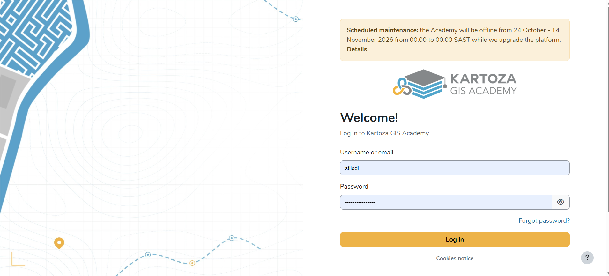
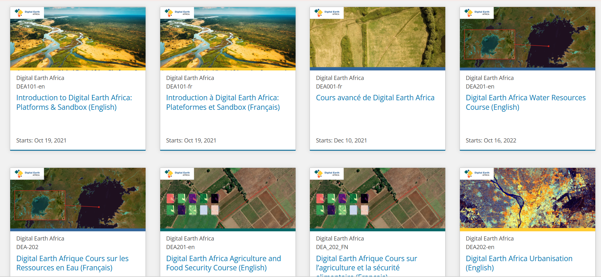
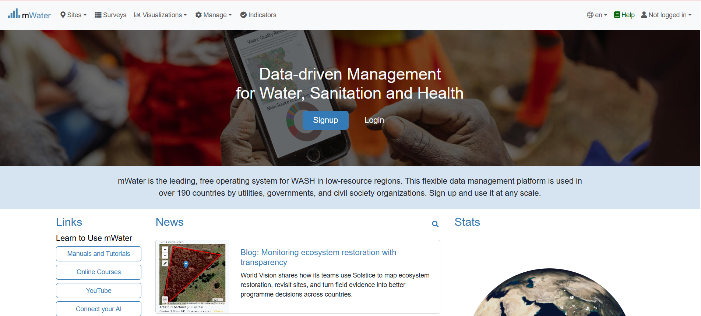
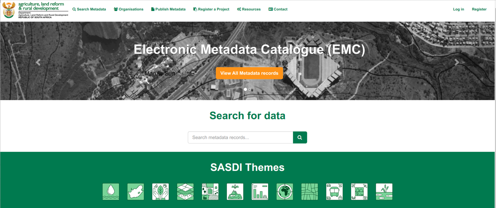
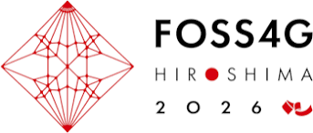

Training
Work
Training programmes, data platforms and maps I’ve worked on, with what I actually did on each.
Where the work has been
Cities where I’ve delivered training or project work. Remote and continent-wide projects, like the UPU course and Digital Earth Africa, aren’t pinned.
Equal Earth projection (EPSG:8857). Scroll or pinch to zoom, drag to pan. Country outlines from Natural Earth.
Projects
-
The UPU wanted a self-taught GIS course covering the first two courses of its GIS curriculum, from GIS fundamentals through to spatial data infrastructure, metadata and web services.
We mapped every unit of the curriculum against existing material, identified what needed updating and wrote what was missing, then helped translate and adapt the content for the English course on TrainPost. The postal angle runs throughout: addressing, geocoding, address data models and publishing address data as web services.
-

I run Kartoza’s Moodle learning platform, set up specifically for geospatial, remote sensing and Earth observation training. Courses are built to run self-paced or instructor-led, with hands-on exercises, quizzes and certificates.
I work on the platform at every level: as site administrator (configuration, theming, users and enrolments), as a manager building and organising courses, and as a user, so I know how it feels from the learner’s side.
-

TrainingEarth Observation learning content
Digital Earth Africa Across Africa, 2025Refreshed and improved course content on the Digital Earth Africa learning platform (learn.digitalearthafrica.org), which teaches analysts in national agencies to use free satellite data for land, water and environmental monitoring.
-
Maps and analysis
New national maps and a move to open source
Commonwealth of Dominica Dominica, CaribbeanDominica was renewing its maps and moving its GIS work to open-source software. I worked on the cartography for the new maps and trained the team on QGIS, PostGIS and GeoNode so they could run the new setup themselves.
-
Platforms
Global Electrification Platform
GEP country platforms Somalia, Somaliland and BeninThe GEP is an open platform for planning electricity access. I prepared the national datasets that feed it and supported the GeoNode (Django) platform that hosts them.
For Somalia and Somaliland I also wrote the training material and trained users to work with and maintain the platform. For Benin I worked on the platform and data preparation.
-
Training
Geospatial Data Science Certificate (GDSC)
IEB, with SAGTA, Kartoza and the University of Pretoria South AfricaA GIS certificate for Grade 10 to 12 learners, piloted in 2022 with 330 learners from 32 schools. I maintained the online course, supported learners and teachers through it, and contributed to the course material.
More on the certificate from the University of Pretoria.
-

I learned the mWater platform from scratch, then built a three-day course and a full training guide covering survey design, managing organisations and data sharing, data integration, analysis and visualisation. I then delivered the training.
Project write-up: LM International WASH MIS.
-
 Training
TrainingGeospatial data for energy access planning
SEforALL and Climate Compatible Growth (CCG) Nigeria, Ethiopia and ItalyDeveloped course material on geospatial data management for energy access modelling and trained energy planners at Energy Modelling Platform events. I also helped set up a proficiency badge track for the course on the Open University's OpenLearn Create.
-
Training
GIS Fundamentals for Educators
Kartoza GIS Academy South AfricaI train teachers in GIS fundamentals so they have the practical skills and confidence to bring GIS into their own classrooms.
-
Platforms
Secure spatial data platform deployment
Confidential client Southern AfricaDeployed and tested a containerised spatial data platform (PostGIS, QGIS Server and a browser-based QGIS desktop) on Windows and Ubuntu. I tested role-based access, reported issues to the development team, wrote the setup guide and prepared the client training.
-

Published datasets through the national spatial data infrastructure catalogue and trained government teams on metadata and data governance.
Project write-up: Electronic Metadata Catalogue and Data Capture Project Register.
-
Maps and analysis
Waterberg Biosphere Reserve SEMP
USAID Waterberg, South AfricaGIS and remote sensing for biodiversity mapping and resilience planning.
-
Maps and analysis
OpenStreetMap cartography standards
Kartoza, open source github.com/kartoza/osm-cartographyCo-designed a QGIS cartography for OpenStreetMap data and wrote the project's cartographic standards document.
The styles and standards are public at github.com/kartoza/osm-cartography.
Talks and teaching
-

2026Training Without Barriers: lessons for building geospatial capacity
FOSS4G 2026, Hiroshima
Keynote-track talk on what it takes to build geospatial capacity where connectivity, language and hardware are all constraints.
-
2026
Course convener, QGIS certified training
QGIS certification register
Convener for Kartoza’s QGIS courses on the official register, including Introduction to QGIS, self-paced.
-
2022
Classroom GIS in South Africa
FOSS4G 2022
Taking open-source GIS into secondary school classrooms through the Geospatial Data Science Certificate.